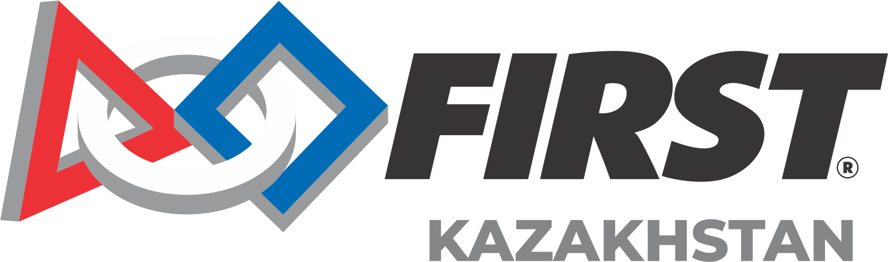

Вдохновлять молодых людей становиться лидерами и новаторами в науке и технологиях, вовлекая их в увлекательные программы с наставниками, которые развивают навыки в науке, инженерии и технологиях, вдохновляют инновации и способствуют развитию всесторонних жизненных способностей, включая уверенность в себе, коммуникацию и лидерство.
FIRST Kazakhstan — это региональная организация, которая приносит преобразующую силу программ FIRST студентам по всему Казахстану. Мы работаем над расширением доступа к робототехническому образованию и соревнованиям, предоставляя возможности студентам развивать критически важные STEM навыки.
Наша миссия — вдохновлять и готовить следующее поколение инженеров, учёных и новаторов в Казахстане через практические программы робототехники, которые сочетают азарт спорта с строгостью науки и технологий.
Через партнёрства со школами, университетами и лидерами индустрии, FIRST Kazakhstan создаёт пути для студентов, чтобы открыть свою страсть к STEM и развить навыки, необходимые для успеха в 21 веке.

Открытие (Discovery): Мы исследуем новые навыки и идеи.
Инновации (Innovation): Мы используем творчество и настойчивость для решения проблем.
Влияние (Impact): Мы применяем то, что изучаем, чтобы улучшить наш мир.
Инклюзивность (Inclusion): Мы уважаем друг друга и принимаем наши различия.
Командная работа (Teamwork): Мы сильнее, когда работаем вместе.
Веселье (Fun): Мы наслаждаемся и празднуем то, что делаем!
Миссия FIRST — вдохновлять молодых людей становиться лидерами в науке и технологиях, вовлекая их в увлекательные программы с наставниками, которые развивают навыки в науке, инженерии и технологиях. Мы вдохновляем инновации и способствуем развитию всесторонних жизненных способностей, включая уверенность в себе, коммуникацию и лидерство.
Программы FIRST охватили миллионы студентов по всему миру. Участники показывают повышенный интерес к STEM карьерам, улучшенные навыки решения проблем и большую уверенность. Выпускники FIRST чаще получают STEM степени и строят карьеры, способствуя более сильной глобальной инновационной экономике.
Для возрастов 4-16 лет. Студенты строят роботов из LEGO и решают реальные проблемы через исследовательские и инновационные проекты.
Для 7-12 классов. Команды проектируют, строят и программируют роботов, используя переиспользуемые платформы для соревнований в формате альянсов.
Для 9-12 классов. Самая продвинутая программа, где команды строят роботов промышленного размера для соревнований в сложных играх.
Сезон начинается с раскрытия игры и публикации правил. Команды получают свой вызов и начинают планирование.
Команды проектируют, строят и программируют своих роботов. Обычно 6-8 недель интенсивной разработки.
Региональные и чемпионские мероприятия, где команды соревнуются, демонстрируют свою работу и празднуют достижения.
Команды размышляют о своём сезоне, делятся знаниями и готовятся к следующему вызову.